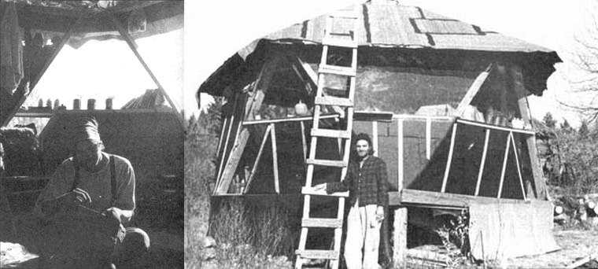
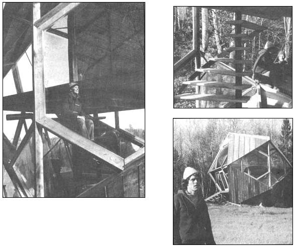
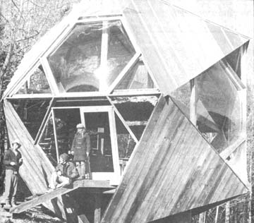

Taken from the article "Alternative Architecture Arriving" by John Hale in the Somerset Reporter, Nov. 25, 1971. Photos by Hale.
The Great State Of Maine (as they say at the political conventions) certainly ain't no slouch these days when it comes to build-yer-own, maximum value for minimum money, alternative ideas in housing. There's probably even folks up that way who'll argue that a small area-not more than six or seven miles across-around Skowhegan, in the Pine Tree State, bids fair to lead the nation in low-cost, eye-popping, do-it-yourself domiciles.
For instance, there's a feller up in that neck of the forest (Norridgewock Woods, to be exact) named Jay Hawes who lives in an eight-sided log cabin that he built almost entirely by himself.
"I was toying around with the idea of living space," Jay says. "Everything I'd ever lived in was square-square rooms, square buildings-and I thought I might feel a noticeably different psychological effect from living in a differently shaped structure. The more I read Frank Lloyd Wright's ideas on organic architecture, the more I thought that a building should fit in and contribute to its environment . . . and the more ideas I had about the kind of house I wanted to construct.
"Some of those visionary concepts were a little impractical," Hawes admits, "and I had to modify or abandon them. For example, I once had the idea that this cabin's roof should soar up to a single point like a big tree . . . but I finally discarded that notion along with the round and diamond-shaped windows I'd originally planned."
As it stands, Hawes' lodge is definitely an imaginative cut above your typical log cabin. The eight-sided building is topped by a more or less A-frame roof and it's a sure bet that not another structure of the same design nestles anywhere on the face of the earth.
Jay worked nine hours a day, six days a week for two and a half months to build his new home. The walls of the lodge are constructed of 105 logs which Hawes axe-felled and notched by hand. "I really feel that I wouldn't have enjoyed raising the house nearly as much if I'd used a chainsaw to cut those pine and tamarack trees," Jay says.
Hawes allows he originally intended to construct the cabin entirely by himself but that he was forced to compromise just a mite on that ideal as he went along. "Lifting some of those logs into place was too much for one person," he says. "Then, as the weather turned colder, I got desperate enough to ask my father to help install the five windows and roof the building with tar paper.
"As it turned out, though, I still put most of this house together with my own hands for a total cost of about $180 . . . and I think I've shared one of the deepest expressions of my race. A log cabin takes you back in history . . . and building your own home is one of the most natural things a man can do."
Sally Hilmer and Bob Rutman, who live a few miles north of Jay Hawes, obviously share his feelings . . . and a few of his ideas on how inexpensive a satisfying shelter can be. Bob and Sally built their artists' retreat near Solon, Maine "with a little help from their friends" in only three weeks for approximately $150 out-of-pocket money. The house is 16 feet in diameter with a ceiling that ranges from seven feet high at the walls to a height of. ten feet at the skylight in the structure's center. The building-heated by sunlight and a wood-burning stove-is both neat and cozy inside and, according to Rutman, "Three or four people working full time could have put it up in three or four days."
Bob and Sally and occasional helpers laid the building's foundation first and nailed down a five-sided floor. The roof-five panels which meet in a point-was next assembled on the base . . . then given one-tenth of a turn so that the five corners of the top were located in the middles of the five sides of the floor. Finally, the roof was raised straight up and 2 X 4's nailed diagonally from the corners of the foundation to the corners of the top (creating ten triangular wall panels). These panels were walled in halfway up and sealed with 20 mm vinyl "windows" to the roofline. A vinyl skylight finished off the structure's peak.
As unusual as the Hawes or Rutman homes might be, the real showpiece of alternative housing in the Skowhegan, Maine area has to be the two-story, 20-sided masterpiece designed by Tom Hilmer for Angus King. This splendiferous structure is made up of 10 solid triangular panels and 10 "glassed in" sections (in which are featured six hexagonal bubble window,. made of quarter-inch acrylics) . . . all mounted on an "amazingly small" foundation of only three yards of poured concrete anchored into a hillside ledge.
The Hilmer-King creation is just as unorthodox in side as its exterior suggests. The first floor is square and set at a 45° angle to the rectangular second level suspended (a Hilmer innovation) across the structure at mid-height. A spiral stairway joins the two floors.
Edie King, Angus' wife, has divided the downstairs of Tom Hilmer's inspired design into a kitchen and dining room-living room area . . . and used curtains to turn the upstairs into private bedrooms (a net railing around the suspended second floor prevents the King baby from tumbling over the edge).
Perhaps most unbelievable about the Hilmer-King dream castle is the bargain-basement price for which it was built. Cash expenses for the complete structure added up to only $2,500 . . . $1,500 of which was lavished on the six vacuum-formed bubble windows. "We kept construction costs down because our modified geodesic dome encloses nearly the maximum possible space with a minimum of materials," says Tom Hilmer. "We only used 4,000 board feet of lumber to create a house 26 feet high with 750 square feet of floor space.
"We also realized substantial savings by specifying extremely common and inexpensive components for the structure whenever possible. The roof, you'll notice, is the same ordinary standing seam sheet metal found on many farm buildings.
"Doing all the work ourselves (Hilmer and King erected the home on weekends during the summer and fall of 1971) obviously saved a lot of bucks that we'd otherwise have spent on construction labor.
"And finally," states Tom, "the fact that this house-with its southern exposure and no insulation-is intended only for summer use allowed us to hold its budget right down to a rock-bottom level."
And just in case you're wondering what it's like to build and live in a real, live Crystal Palace . . . Angus King says, "I certainly learned to saw and nail at some crazy angles," and Edie testifies, "It's the most fantastic-looking place . . . I really love it."
Are the far-out domiciles enjoyed by Jay Hawes, Bob Rutman and the King family forerunners of lowcost housing for the average U.S. family? Probably not. Then again (to hark back to the political note with which this piece began) an old election slogan states that "as Maine goes, so goes the nation". Maybe those folks up there in the Pine Tree State are really onto something.
|
 ABOVE LEFT AND RIGHT: The 16-foot diameter house constructed by Sally Hilmer and Bob Rutman (with a little help from their friends) costonly $150 and is both neatand cozy inside. |
 ABOVE AND RIGHT: The Hilmer-King creation way up in the state of Maine is one dome house that definitely has a style all its own. With a spiral staircase and two floors turned at a 45? angle to each other, the structure is just as flamboyant inside as out. It's hard to believe the building cost only $2,500. |
 |